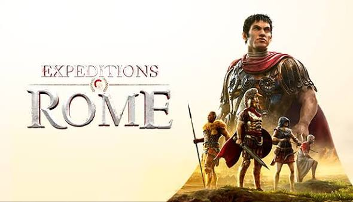
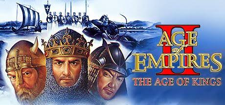
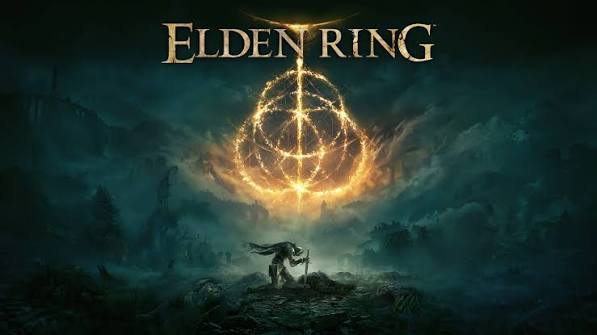
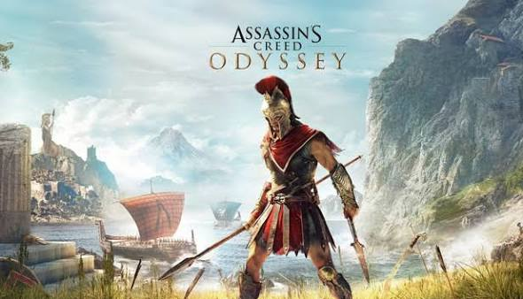

1. Expeditions: Rome
Género: Estrategia / RPG
Ambientación: República Romana y campañas militares en la Bética y Grecia.

Bienvenido a nuestra plataforma. Aquí explorarás el esplendor del Imperio Romano en la Península Ibérica (Hispalis, Barcino, Emerita Augusta) y su recreación en el ocio digital y los videojuegos de estrategia y rol.
Este portal web combina la divulgación histórica sobre la antigüedad clásica con el análisis de títulos destacados de la industria del videojuego ambientados en Roma y Grecia.

Selección de títulos analizados en nuestra base de datos (puedes consultar el archivo completo en la sección Datos XML):
Género: Estrategia / RPG
Ambientación: República Romana y campañas militares en la Bética y Grecia.

Género: Rol y Acción (RPG)
Ambientación: Fantasía oscura con influencias en la arquitectura y mitología clásica.

Género: Acción y Rol (RPG)
Ambientación: Antigua Grecia durante la Guerra del Peloponeso.

Descubre nuestras páginas dedicadas al legado romano en la península: